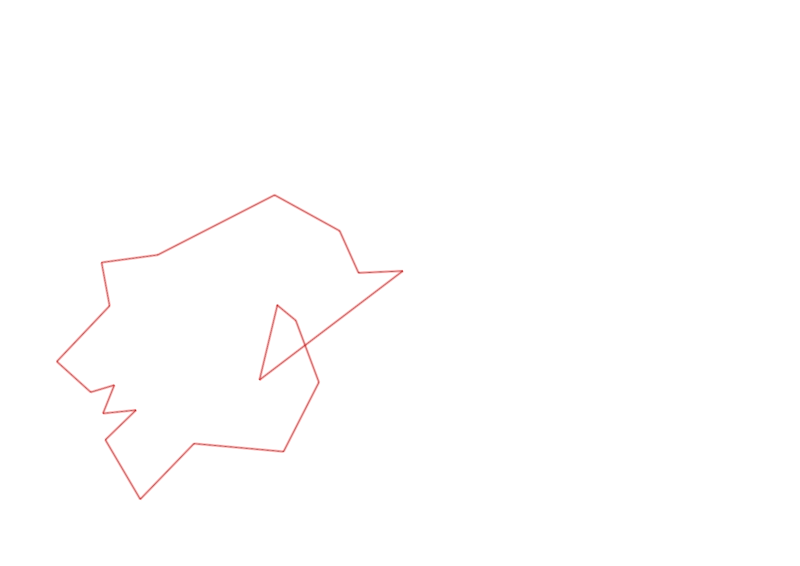
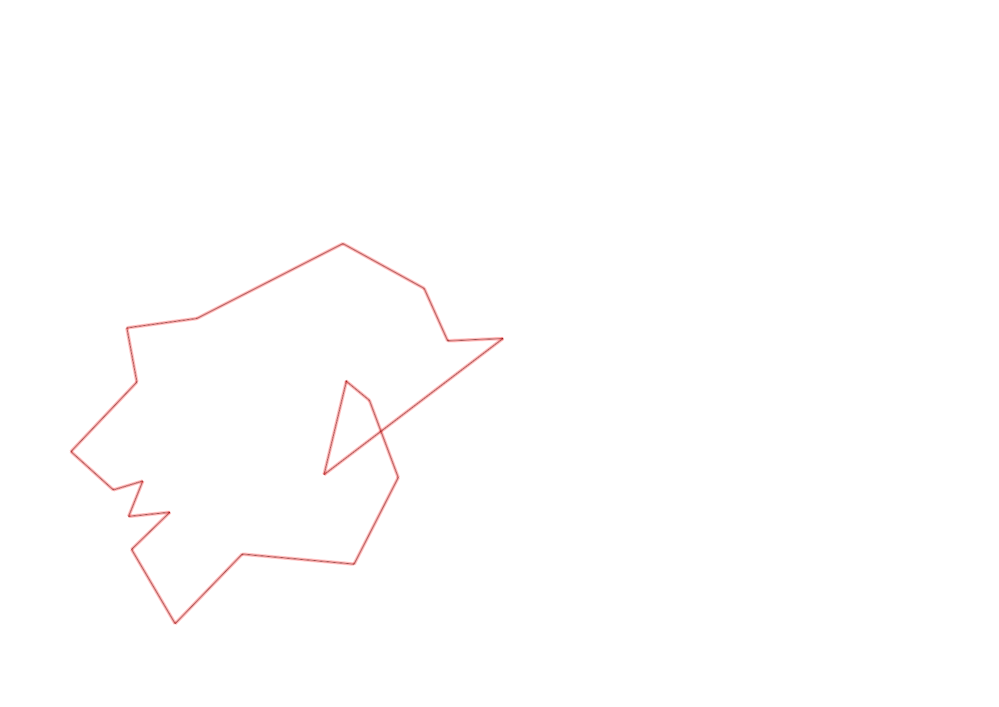

| Control |
Points |
Time Punched |
Distance |
Your Time |
Pace |
Place |
Fastest Time |
Median Time |
% Behind Fastest |
| 127 |
20 |
|
0.06 |
0:00:10 |
02:46 |
7 / 30 |
0:00:01 |
0:00:32 |
900% |
| 42 |
40 |
|
0.17 |
0:02:02 |
11:57 |
13 / 20 |
0:01:06 |
0:01:52 |
84% |
| 61 |
60 |
|
0.21 |
0:03:49 |
18:10 |
14 / 20 |
0:02:20 |
0:03:34 |
63% |
| 59 |
50 |
|
0.24 |
0:02:46 |
11:31 |
13 / 19 |
0:01:47 |
0:02:30 |
55% |
| 77 |
70 |
|
0.21 |
0:03:08 |
14:55 |
14 / 17 |
0:01:25 |
0:02:33 |
121% |
| 40 |
40 |
|
0.18 |
0:03:16 |
18:08 |
16 / 18 |
0:01:16 |
0:02:38 |
157% |
| 41 |
40 |
|
0.11 |
0:01:42 |
15:27 |
14 / 20 |
0:00:28 |
0:01:07 |
264% |
| 71 |
70 |
|
0.09 |
0:01:40 |
18:31 |
11 / 12 |
0:00:33 |
0:01:12 |
203% |
| 54 |
50 |
|
0.08 |
0:00:45 |
09:22 |
17 / 33 |
0:00:27 |
0:00:45 |
66% |
| 69 |
60 |
|
0.07 |
0:01:49 |
25:57 |
8 / 20 |
0:01:00 |
0:01:56 |
81% |
| 53 |
50 |
|
0.12 |
0:02:05 |
17:21 |
21 / 26 |
0:01:16 |
0:01:51 |
64% |
| 44 |
40 |
|
0.2 |
0:01:23 |
06:55 |
7 / 22 |
0:00:39 |
0:01:40 |
112% |
| 32 |
30 |
|
0.12 |
0:02:21 |
19:35 |
18 / 22 |
0:00:43 |
0:01:19 |
227% |
| 63 |
60 |
|
0.15 |
0:01:29 |
09:53 |
13 / 25 |
0:01:05 |
0:01:29 |
36% |
| 107 |
100 |
|
0.35 |
0:04:24 |
12:34 |
14 / 22 |
0:02:14 |
0:03:49 |
97% |
| 57 |
50 |
|
0.2 |
0:03:46 |
18:50 |
11 / 22 |
0:01:54 |
0:03:53 |
98% |
| 92 |
90 |
|
0.12 |
0:07:55 |
1:05:58 |
16 / 18 |
0:02:10 |
0:04:22 |
265% |
| 47 |
40 |
|
0.12 |
0:07:01 |
58:28 |
12 / 16 |
0:01:07 |
0:04:40 |
528% |
| 38 |
30 |
|
0.48 |
0:05:01 |
10:27 |
1 / 2 |
0:05:01 |
0:06:07 |
0% |
| Finish |
0 |
|
0.2 |
0:01:15 |
06:15 |
3 / 10 |
-1 day, 23:07:29 |
0:01:37 |
-99% |
Total Distance Covered: 3.48km
Points Scored: 990
Late Penalty: 0
Final Score: 990
Total Time: 0hours 57minutes 47seconds
Efficiency: 284.48 points/km
 
